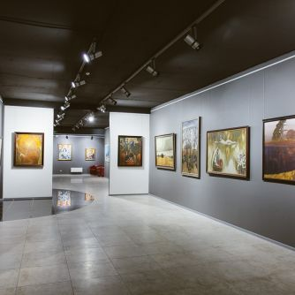
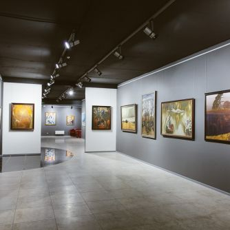
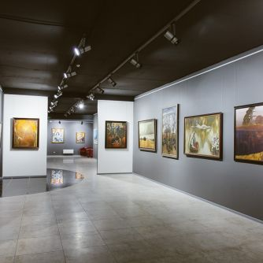
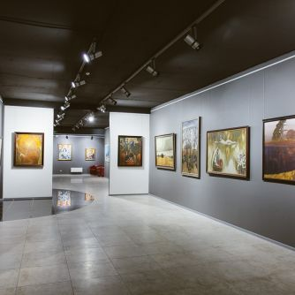

Зеленый портал пообщался с австралийским экологом, ботаником и пермакультурным дизайнером Дэвидом Брауном. Он участвовал в картировании деревьев в Минске и пришел к выводу, что нашему городу они нужны, как никакому другому.
У себя на родине, в Австралии, Дэвид Браун занимается экологическими проектами, читает лекции, посещает экспериментальные территории – от дач до лесов. А экологическое образование получил в Университете Тасмании. В Беларуси он бывал не раз.
«Одна из улиц, которая больше всего нуждается в деревьях, – проспект Независимости. Вернувшись через год в Беларусь, я заметил, что деревьев там стало меньше, и это грустно. Не знаю другого города, который нуждался бы в деревьях так же сильно. А ведь я бывал в Канаде, США, России, Западной Европе, Великобритании, на Гавайях, в Новой Зеландии и Австралии», – рассказывает эколог.
Причем, по словам Дэвида, в Минске картирование совсем не учло то, в каких условиях живут деревья: достаточно ли подпитываются, получают ли необходимое количество влаги и т. д.
Если человек не умеет хорошо отдыхать, он вряд ли сможет хорошо работать